10 Análise exploratória de dados
10.1 Introdução
Esse capítulo lhe mostrará como usar visualização e transformação para explorar seus dados de uma forma sistemática, uma tarefa que os estatísticos chamam de análise exploratória dos dados, ou EDA (Exploratory Data Analysis) abreviadamente. EDA é um ciclo iterativo. Você:
Gera questões sobre os seus dados.
Encontra respostas visualizando, transformando e modelando seus dados.
Usa o que aprendeu para refinar suas questões e/ou gerar novas questões.
A EDA não é um processo formal com um conjunto estrito de regras. Mais que qualquer coisa, EDA é um estado da mente. Durante as fases inicias da EDA você deverá se sentir livre para investigar cada ideia que ocorre a você. Algumas dessas ideias darão certo e outras serão becos sem saída. À medida que sua exploração continua, você se concentrará em alguns insights particularmente produtivos que você eventualmente compilará e comunicará a outras pessoas.
A EDA é uma parte importante de qualquer análise de dados, mesmo que as principais questões de pesquisa sejam entregues a você de bandeja, porque você sempre precisa investigar a qualidade dos seus dados. Limpeza de dados é apenas uma das aplicações da EDA: você questiona se seus dados estão de acordo com suas expectativas ou não. Para fazer limpeza de dados, você precisará implementar todas as ferramentas da EDA: visualização, transformação e modelagem.
10.1.1 Pré-requisitos
Nesse capítulo, combinaremos o que você tem aprendido sobre dplyr e ggplot2 para fazer perguntas interativamente, responder com dados e, em seguida, fazer novas perguntas.
10.2 Questões
“Não existem questões estatísticas rotineiras, apenas rotinas estatísticas questionáveis.” — Sir David Cox
“É muito melhor uma resposta aproximada à pergunta certa, que muitas vezes é vaga, do que uma resposta exata à pergunta errada, que sempre pode ser tornada precisa.” — John Tukey
Seu objetivo durante a EDA é desenvolver uma compreensão dos seus dados. A maneira mais fácil de fazer isso é usar perguntas como ferramentas para orientar sua investigação. Quando você faz uma pergunta, ela concentra sua atenção em uma parte específica do seu conjunto de dados e ajuda você a decidir quais gráficos, modelos ou transformações fazer.
EDA é fundamentalmente um processo criativo. E como a maioria dos processos criativos, a chave para fazer perguntas de qualidade é gerar uma grande quantidade de perguntas. É difícil fazer perguntas reveladoras no início da sua análise porque você não sabe quais insights podem ser obtidos do seu conjunto de dados. Por outro lado, cada nova questão que você fizer irá expor você a um novo aspecto dos seus dados e aumentar sua chance de fazer uma descoberta. Você pode detalhar rapidamente as partes mais interessantes dos seus dados—e desenvolver um conjunto de perguntas instigantes—se você acompanhar cada pergunta com uma nova pergunta com base no que encontrar.
Não há regra sobre quais perguntas você deve fazer para orientar sua pesquisa. No entanto, dois tipos de perguntas sempre serão úteis para fazer descobertas em seus dados. Você pode formular essas perguntas livremente como:
Que tipo de variação ocorre dentro das minhas variáveis?
Que tipo de covariação ocorre entre as minhas variáveis?
O restante deste capítulo examinará essas duas questões. Explicaremos o que são variação e covariação e mostraremos várias maneiras de responder a cada pergunta.
10.3 Variação
Variação é a tendência dos valores de uma variável mudar de medida para medida. Você pode ver variações facilmente na vida real; se você medir qualquer variável contínua duas vezes, você obterá dois diferentes resultados. Isso é verdade mesmo se você mede quantidades constantes, como a velocidade da luz. Cada uma de suas medidas irá incluir uma pequena quantidade de erro que varia de medida a medida. Variáveis também variam se você mede diferentes indivíduos (por exemplo, cor dos olhos de diferentes pessoas) ou diferentes tempos (por exemplo, os níveis de energia de um elétron em diferentes momentos). Cada variável tem seu próprio padrão de variação, que pode revelar informações interessantes sobre como ela varia entre medições na mesma observação, bem como entre observações diferentes. A melhor forma de entender o padrão é visualizando a distribuição dos valores da variável, o que você aprendeu em Capítulo 1.
Vamos iniciar nossa exploração visualizando a variação nos pesos (quilate) de ~54,000 diamantes do conjunto de dados diamante. Como quilate é uma variável numérica, podemos usar um histograma:
library(dados)
ggplot(diamante, aes(x = quilate)) +
geom_histogram(binwidth = 0.5)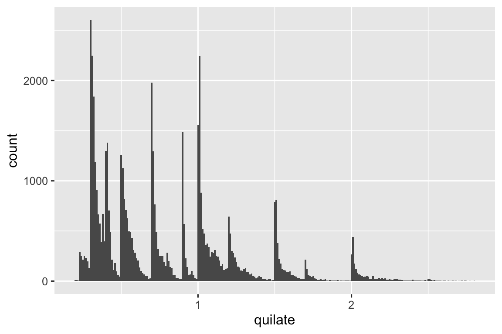
Agora que você pode visualizar a variação, o que você deve observar em seus gráficos? E que tipo de perguntas complementares você deve fazer? Montamos abaixo uma lista dos tipos mais comuns de informações que você encontrará em seus gráficos, junto com algumas perguntas complementares para cada tipo de informação. A chave para fazer boas questões de acompanhamento será contar com a sua curiosidade (o que mais você quer aprender?) bem como do seu ceticismo (Como isso pode ser enganoso?).
10.3.1 Valores típicos
Em ambos gráficos de barras e histogramas, barras altas mostram valores mais comuns de uma variável, e barras mais baixas mostram valores menos comuns. Locais que não têm barras revelam valores que não foram vistos nos seus dados. Para transformar essas informações em perguntas úteis, observe qualquer coisa não esperada:
Quais valores são os mais comuns? Por quê?
Quais valores são raros? Por quê? Isso corresponde às suas expectativas?
Você consegue ver padrões incomuns? O que poderia explicá-los?
Vamos observar a distribuição de quilate para os diamantes menores.
menores_diamantes <- diamante |>
filter(quilate < 3)
ggplot(menores_diamantes, aes(x = quilate)) +
geom_histogram(binwidth = 0.01)
Esse histograma sugere várias questões interessantes:
Por que há mais diamantes em números inteiros de quilates e frações comuns de quilates?
Por que há mais diamantes ligeiramente à direita de cada pico do que há ligeiramente à esquerda de cada pico?
Visualizações também podem revelar agrupamentos, os quais sugerem que existem subgrupos em seus dados. Para entender os subgrupos, questione:
Quão similares as observações dentro de cada subgrupo são umas às outras?
Quão diferentes as observações em grupos separados são umas das outras?
Como você pode explicar ou descrever os grupos?
Por que a aparência de agrupamentos pode ser enganadora?
Algumas dessas questões podem ser respondidas com os dados, enquanto outras irão requerer experiência de domínio sobre os dados. Muitas delas irão levar você a explorar a relação entre variáveis, por exemplo, para ver se os valores de uma variável podem explicar o comportamento de outra variável. Chegaremos a isso em breve.
10.3.2 Valores atípicos
Outliers são observações atípicas, pontos de dados que não estão ajustados ao padrão. Algumas vezes outliers são erros de entrada de dados, algumas vezes são apenas valores extremos que passaram a ser observados nesta coleta de dados, e outras vezes, eles sugerem importantes novas descobertas. Quando você tem muitos dados, outliers são algumas vezes difíceis de serem vistos em histogramas. Por exemplo, pegue a distribuição da variável y do conjunto de dados de diamante. A única evidência de valores discrepantes são os limites incomumente amplos no eixo x.
ggplot(diamante, aes(x = y)) +
geom_histogram(binwidth = 0.5)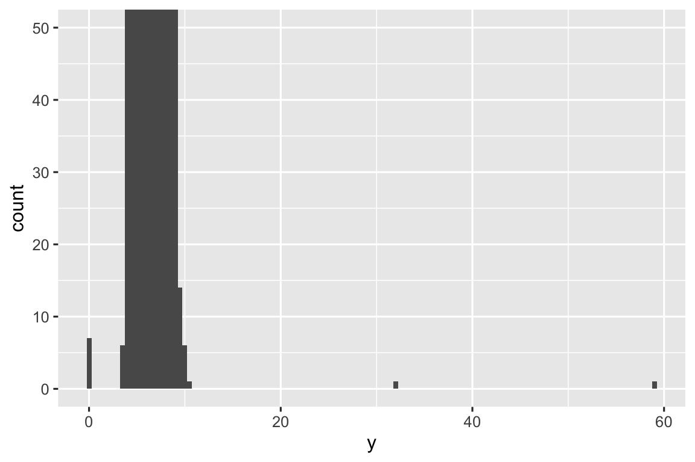
Há tantas observações nas classes comuns que as classes mais raras são muito baixas, tornando muito difícil vê-las (embora talvez, se você olhar atentamente para o 0, você consiga notar algo). Para facilitar a visualização dos valores incomuns, precisamos ampliar os valores pequenos do eixo y com coord_cartesian():
ggplot(diamante, aes(x = y)) +
geom_histogram(binwidth = 0.5) +
coord_cartesian(ylim = c(0, 50))
coord_cartesian() também possui um argumento xlim() para quando você precisar ampliar o eixo x. O ggplot2 também possui as funções xlim() e ylim() que funcionam de maneira um pouco diferente: elas jogam fora os dados fora dos limites.
Isso nos permite ver que existem três valores incomuns: 0, ~30 e ~60. Nós os retiramos com dplyr:
incomum <- diamante |>
filter(y < 3 | y > 20) |>
select(preco, x, y, z) |>
arrange(y)
incomum
#> # A tibble: 9 × 4
#> preco x y z
#> <int> <dbl> <dbl> <dbl>
#> 1 5139 0 0 0
#> 2 6381 0 0 0
#> 3 12800 0 0 0
#> 4 15686 0 0 0
#> 5 18034 0 0 0
#> 6 2130 0 0 0
#> 7 2130 0 0 0
#> 8 2075 5.15 31.8 5.12
#> 9 12210 8.09 58.9 8.06A variável y mede uma das três dimensões desses diamantes, em mm. Sabemos que os diamantes não podem ter largura de 0mm, então esses valores devem estar incorretos. Ao fazer EDA, descobrimos dados faltantes codificados como 0, que nunca teríamos encontrado simplesmente procurando por NAs. Em seguida, podemos escolher recodificar estes valores como NAs, a fim de evitar cálculos enganosos. Também podemos suspeitar que as medidas de 32mm e 59mm são implausíveis: esses diamantes têm mais de uma polegada de comprimento, mas não custam centenas de milhares de dólares!
É uma boa prática repetir suas análises com e sem valores discrepantes. Se eles tiverem um efeito mínimo nos resultados e você não conseguir descobrir por que estão ali, é razoável omiti-los e seguir em frente. No entanto, se eles tiverem um efeito substancial nos seus resultados, você não deve abandoná-los sem justificativa. Você precisará descobrir o que os causou (por exemplo, um erro de entrada de dados) e divulgar que os removeu em seu artigo.
10.3.3 Exercícios
Explore a distribuição das variáveis
x,y, andzemdiamantes. O que você aprendeu? Pense em um diamante e como você pode decidir qual dimensão é o comprimento, largura e profundidade.Explore a distribuição de
preço. Você percebe algo incomum ou surpreendente? (Dica: pense cuidadosamente sobre obinwidthe tenha certeza que você tentou uma ampla gama de valores.)Quantos diamantes equivalem a 0,99 quilates? Quantos equivalem a 1 quilate? O que você acha que é a causa da diferença?
Compare e contraste
coord_cartesian()vs.xlim()ouylim()quando fizer uma ampliação em um histograma. O que acontece se você deixa obinwidthdesativado? O que acontece se você tentar ampliar de forma que apenas meia barra seja exibida?
10.4 Lidando com valores atípicos
Se você encontrou valores atípicos no seu conjunto de dados e simplesmente deseja prosseguir com o restante das suas análises, você tem duas opções:
-
Eliminar a linha inteira com os valores estranhos:
Não recomendamos esta opção porque um valor inválido não implica que todos os outros valores para essa observação também sejam inválidos. Além disso, se você tiver dados de baixa qualidade, ao aplicar essa abordagem a todas as variáveis, você poderá descobrir que não sobrará mais dados!
-
Ao invés disso, nós recomendamos substituir os valores atípicos por valores faltantes (missing values). O caminho mais fácil para fazer isso, é usar a função mutate() para substituir os valores atípicos da variável. Você também pode usar o if_else() para substituir os valores atípicos por NA:
Não é óbvio onde você deve posicionar os valores ausentes, então o ggplot2 não os inclui no gráfico, mas avisa que eles foram removidos:
ggplot(diamante2, aes(x = x, y = y)) +
geom_point()
#> Warning: Removed 9 rows containing missing values or values outside the scale range
#> (`geom_point()`).
Para suprimir esse aviso, defina na.rm = TRUE:
ggplot(diamante2, aes(x = x, y = y)) +
geom_point(na.rm = TRUE)Outras vezes, você deseja entender o que torna as observações com valores ausentes diferentes das observações com valores registrados. Por exemplo, em nycflights13::flights11, valores ausentes na variável dep_time indicam que o voo foi cancelado. Então, você pode querer comparar os horários de partida programados para horários cancelados e não cancelados. Você pode fazer isso criando uma nova variável, usando is.na() para verificar se dep_time está faltando.
dados::voos |>
mutate(
cancelado = is.na(horario_saida),
hora_programada = saida_programada %/% 100,
min_programado = saida_programada %% 100,
saida_programada = hora_programada + (min_programado / 60)
) |>
ggplot(aes(x = saida_programada)) +
geom_freqpoly(aes(color = cancelado), binwidth = 1/4)
No entanto, este gráfico não é bom porque há muito mais voos não cancelados do que voos cancelados. Na próxima seção exploraremos algumas técnicas para melhorar essa comparação.
10.4.1 Exercícios
O que acontece com valores ausentes em um histograma? O que acontece com valores ausentes em um gráfico de barras? Por que existe uma diferença em como valores ausentes são tratados em histogramas e gráficos de barras?
Recrie o gráfico de frequência de
saida_programadacolorido de acordo com o voo ter sido cancelado ou não. Também use o facetamento para a variávelcancelado. Experimente diferentes valores do argumentoscalesna função de facetamento para mitigar o efeito de mais voos não cancelados do que voos cancelados.
10.5 Covariação
Se variação descreve o comportamento dentro de uma variável, covariação descreve o comportamento entre variáveis. Covariação é a tendência em que os valores de duas ou mais variáveis variam juntas de maneira relacionada. O melhor caminho para ver a covariação é visualizar a relação entre duas ou mais variáveis.
10.5.1 Uma variável categórica e uma numérica
Por exemplo, vamos explorar como o preço do diamante varia com a qualidade dele (medida pelo corte) usando geom_frenqpoly():
ggplot(diamante, aes(x = preco)) +
geom_freqpoly(aes(color = corte), binwidth = 500, linewidth = 0.75)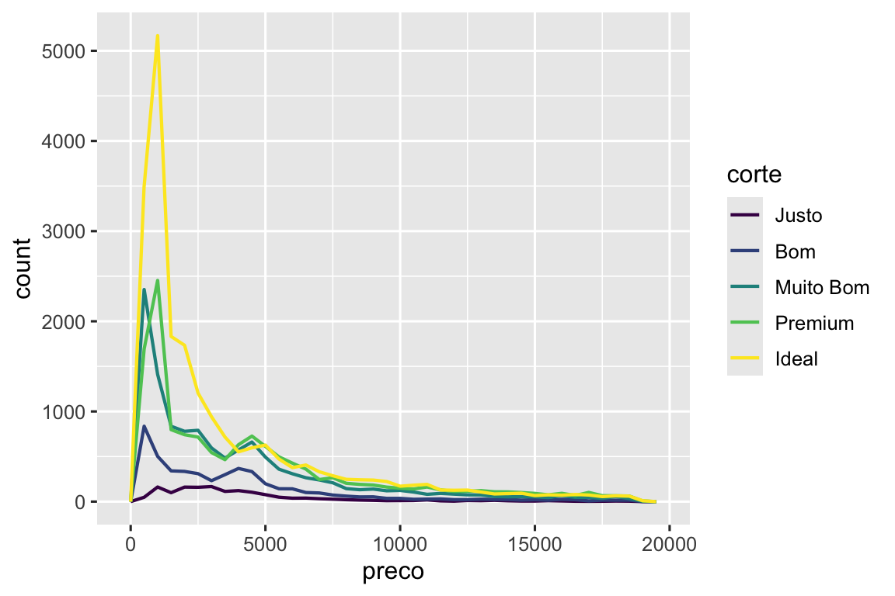
Note que o ggplot2 usa uma escala de cor ordenada para corte porque ele está definido como um fator ordenado nos dados. Você irá aprender mais sobre isso em Seção 16.6.
A aparência padrão de geom_freqpoly() não é tão útil aqui porque a altura, determinada pela contagem geral, difere muito entre os cortes, tornando difícil ver as diferenças nas formas de suas distribuições.
Para fazer a comparação mais facilmente, precisamos trocar o que está no eixo y. Ao invés da contagem (frequência), nós iremos exibir a densidade (density), que é a contagem padronizada para que a área sob cada polígono de frequência seja um.
ggplot(diamante, aes(x = preco, y = after_stat(density))) +
geom_freqpoly(aes(color = corte), binwidth = 500, linewidth = 0.75)
Note que nós estamos mapeando a densidade para o eixo y, mas como density não é uma variável do diamante, nós precisamos primeiro calculá-la. Nós usamos a função after_stat() para fazer isso.
Há algo bastante surpreendente neste gráfico - parece que os diamantes Justos (de qualidade mais baixa) têm o preço médio mais alto! Mas talvez seja porque os polígonos de frequência são um pouco difíceis de interpretar – há muita coisa acontecendo neste gráfico. Um gráfico visualmente mais simples para explorar essa relação são os boxplot.
ggplot(diamante, aes(x = corte, y = preco)) +
geom_boxplot()
Agora nós vemos muito menos informações sobre a distribuição, mas os boxplots são muito mais compactos então é possível compará-los mais facilmente (e mostrar mais coisas em um único gráfico). Isto corrobora a descoberta contra-intuitiva de que diamantes de melhor qualidade são normalmente mais baratos! Nos exercícios, você será desafiado a descobrir o porquê.
corte é um fator ordenado: justo é pior que bom, que por sua vez é pior que muito bom e assim por diante. Muitas variáveis categóricas não têm uma ordem intrínseca, então você pode querer reordená-las para serem apresentadas de forma mais informativa. Uma forma de fazer isso é usar a fct_reorder(). Você irá aprender mais sobre essa função em Seção 16.4, mas nós queremos lhe dar uma prévia rápida do porquê ela é tão útil. Por exemplo, pegue a variável classe do banco de dados milhas. Você pode estar interessado em saber como o consumo de combustível na rodovia varia entre as classes:
ggplot(milhas, aes(x = classe, y = rodovia)) +
geom_boxplot()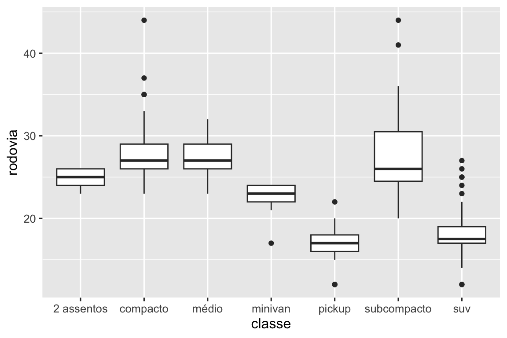
Para tornar a tendência mais fácil de visualizar, nós podemos reordenar classe baseado no valor mediano de rodovia:
ggplot(milhas, aes(x = fct_reorder(classe, rodovia, median), y = rodovia)) +
geom_boxplot()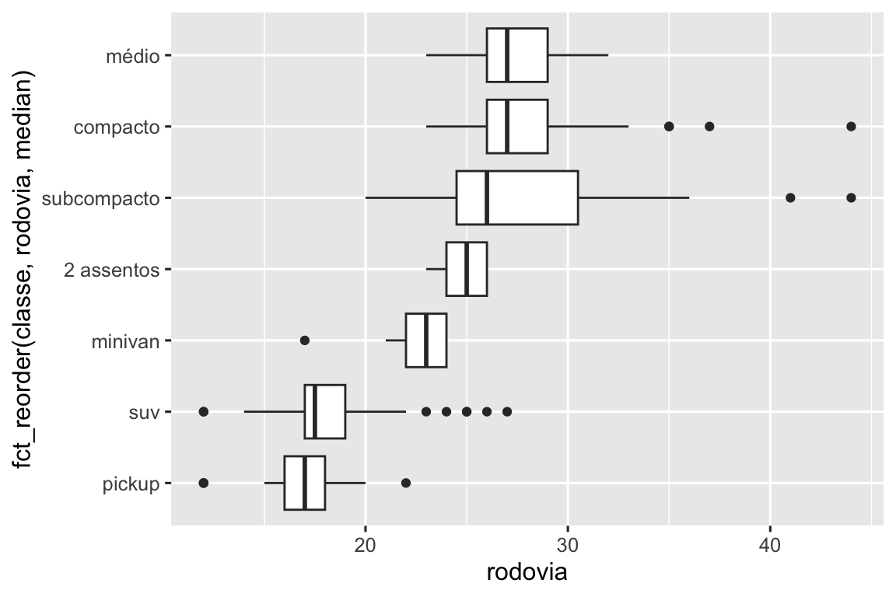
Se você tem nomes variáveis com nomes longos, geom_boxplot() irá funcionar melhor se você girá-los em 90º. Você pode fazer isso trocando os eixos x e y.
ggplot(milhas, aes(x = rodovia, y = fct_reorder(classe, rodovia, median))) +
geom_boxplot()
10.5.1.1 Exercícios
Use o que você aprendeu para melhorar a visualização dos horários de partida de voos cancelados e não cancelados.
Com base na EDA, qual variável do banco de dados diamante parece ser mais importante para predizer o preço de um diamante? Como essa variável está correlacionada com corte? Por que a combinação dessas duas relações resulta em diamantes de pior qualidade terem preços mais elevados?
Ao invés de trocar as variáveis x e y, adicione
coord_flip()como uma nova camada para transformar o boxplot de vertical para horizontal. Como isso se compara à troca de variáveis?Um problema com os boxplots é que eles foram desenvolvidos em uma era de conjuntos de dados muito menores e tendem a exibir um número proibitivamente grande de “valores discrepantes”. Uma abordagem para remediar esse problema é o gráfico de valores de letras. Instale o pacote lvplot, e tente usar
geom_lv()para exibir a distribuição de preço vs. corte. O que você entende? Como você interpreta os gráficos?Crie uma visualização dos preços dos diamantes vs. uma variável categórica do banco de dados diamante usando o
geom_violin(), depois umgeom_histogram()facetado, e depois umgeom_freqpoly()colorido, e então umgeom_density()colorido . Compare e contraste os quatro gráficos. Quais são os prós e contras de cada método de visualização da distribuição de uma variável numérica baseada nos níveis de uma variável categórica?Se você tem um pequeno conjunto de dados, às vezes é útil usar
geom_jitter()para evitar sobreposição dos pontos e visualizar mais facilmente a relação entre as variáveis contínuas e categóricas. O pacote ggbeeswarm disponibiliza vários métodos similares aogeom_jitter(). Liste-os e descreva brevemente o que cada um deles faz.
10.5.2 Duas variáveis categóricas
Para visualizar a covariação entre variáveis categóricas, você precisará contar o número de observações para cada combinação dos níveis dessas variáveis categóricas. Uma maneira de fazer isso é contar com a função embutida geom_count():
ggplot(diamante, aes(x = corte, y = cor)) +
geom_count()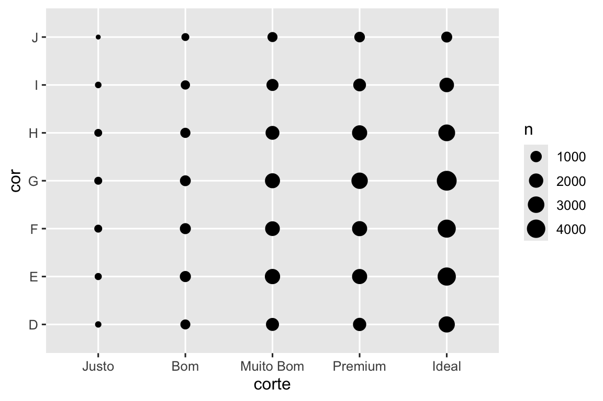
O tamanho de cada círculo no gráfico exibe quantas observações ocorrem em cada combinação de valores. A covariação aparecerá como uma forte correlação entre valores específicos de x e valores específicos de y.
Outra abordagem para explorar a relação entre essas variáveis é calcular as contagens com o dplyr:
diamante |>
count(cor, corte)
#> # A tibble: 35 × 3
#> cor corte n
#> <ord> <ord> <int>
#> 1 D Justo 163
#> 2 D Bom 662
#> 3 D Muito Bom 1513
#> 4 D Premium 1603
#> 5 D Ideal 2834
#> 6 E Justo 224
#> # ℹ 29 more rowsEm seguida, visualize com geom_tile() e a estética (aesthetic) de preechimento:
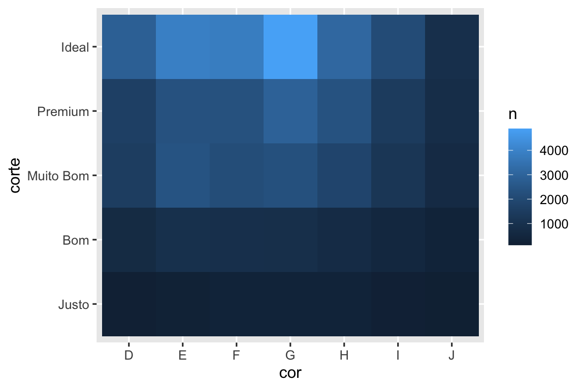
Se as variáveis categóricas não estão ordenadas, você pode querer usar o pacote de seriação para reordenar simultaneamente as linhas e as colunas para revelar padrões interessantes com mais clareza. Para gráficos maiores, você pode querer usar o pacote heatmaply, que cria gráficos interativos.
10.5.2.1 Exercícios
Como você poderia redimensionar o conjunto de dados de contagem acima para mostrar mais claramente a distribuição do corte dentro da cor ou da cor dentro do corte?
Que diferentes insights de dados você obtém com um gráfico de barras segmentado se a cor for mapeada para a estética x e o corte for mapeado para a estética de preenchimento? Calcule as contagens que se enquadram em cada um dos segmentos.
Use
geom_tile()junto com dplyr para explorar como os atrasos médios nas partidas de voos variam de acordo com o destino e o mês do ano.
O que torna o gráfico difícil de ler? Como você poderia melhorá-lo?
10.5.3 Duas variáveis numéricas
Você já viu uma ótima maneira de visualizar a covariação entre duas variáveis numéricas: desenhar um gráfico de dispersão com geom_point(). Você pode ver a covariação com um padrão dos pontos. Por exemplo, você pode ver uma relação positiva entre quilate e preço do diamante: diamantes com mais quilates tem preços mais altos. A relação é exponencial.
menores_diamantes <- diamante |>
filter(quilate < 3)
ggplot(menores_diamantes, aes(x = quilate, y = preco)) +
geom_point()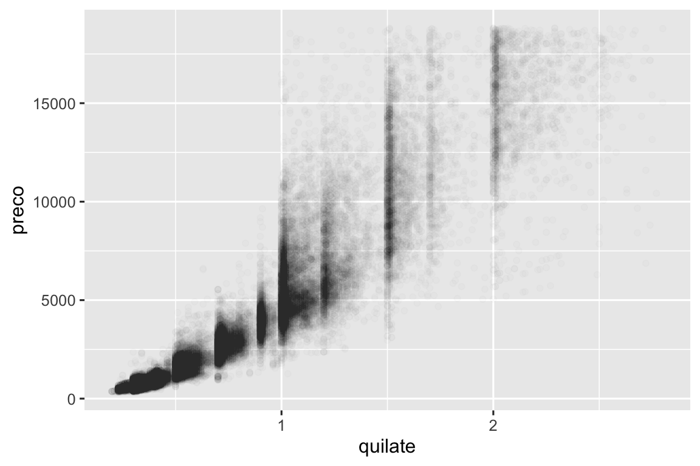
(Nesta seção usaremos o conjunto de dados menores_diamantes para manter o foco na maior parte dos diamantes, que são menores que 3 quilates)
Gráficos de dispersão se tornam menos usuais à medida que seu conjunto de dados cresce, porque os pontos se acumulam, e se amontoam em áreas de preto uniforme, tornando difícil julgar diferenças na densidade dos dados em torno do espaço bidimensional, bem como difícil de ver alguma tendência. Você viu uma forma de corrigir esse problema: usando a estética (aesthetic) alpha para adicionar transparência.
ggplot(menores_diamantes, aes(x = quilate, y = preco)) +
geom_point(alpha = 1 / 100)
Mas usar transparência pode ser desafiador para conjunto de dados muito grande. Outra solução é usar classes (bins). Previamente, você usou geom_histogram() e geom_freqpoly() para criar classes em uma dimensão. Agora você irá aprender como usar geom_bin2d() e geom_hex() para criar classes em duas dimensões.
geom_bin2d() e geom_hex() divide o plano de coordenadas em classes de duas dimensões e então usa um preenchimento de cor para exibir quantos pontos caem em cada classe. geom_bin2d() cria classes retangulares e geom_hex() cria classes hexagonais. Você precisará instalar o pacote hexbin para usar geom_hex().
ggplot(menores_diamantes, aes(x = quilate, y = preco)) +
geom_bin2d()
# install.packages("hexbin")
ggplot(menores_diamantes, aes(x = quilate, y = preco)) +
geom_hex()
#> Warning: Computation failed in `stat_binhex()`.
#> Caused by error in `compute_group()`:
#> ! The package "hexbin" is required for `stat_bin_hex()`.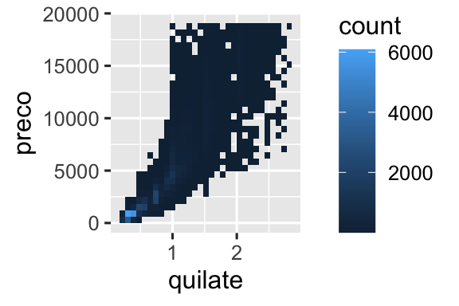
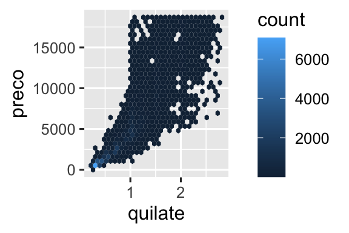
Outra opção é discretizar uma variável contínua para que ela atue como uma variável categórica. Assim você consegue usar uma das técnicas para visualizar a combinação de uma variável categórica e uma contínua que você aprendeu antes. Por exemplo, você poderia categorizar a variável quilate, e então para cada grupo exibir um boxplot:
ggplot(menores_diamantes, aes(x = quilate, y = preco)) +
geom_boxplot(aes(group = cut_width(quilate, 0.1)))![Gráficos boxplot lado a lado de preços por quilate. Cada boxplot representa diamantes que têm 0,1 quilates de diferença em peso. Os boxplots mostram que à medida que quilate aumenta ocorrem aumentos do preço médio. Além disso, diamantes com 1,5 quilates ou menos têm distribuições de preços assimétricos à direita, 1,5 a 2 têm distribuições de preços aproximadamente simétricas e os diamantes que pesam mais têm distribuições assimétricas à esquerda. Diamantes menores e mais baratos têm valores discrepantes na extremidade superior, diamantes maiores, e mais caros têm valores discrepantes na extremidade inferior.](EDA_files/figure-html/unnamed-chunk-27-1.png)
cut_width(x, width), conforme usado acima, divide x em compartimentos de largura (width). Por padrão, os boxplots parecem praticamente os mesmos (exceto pelo número de valores discrepantes) independentemente de quantas observações existem, então é difícil dizer que cada boxplot resume um diferente número de pontos. Uma maneira de mostrar isso é tornar a largura do boxplot proporcional ao número de pontos com varwidth = TRUE.
10.5.3.1 Exercícios
Em vez de resumir a distribuição condicional com um boxplot, você poderia usar um polígono de frequência. O que você precisa considerar ao usar
cut_width()vs.cut_number()? Como isso afeta a visualização da distribuição 2D dequilateepreco?Visualize a distribuição do
quilate, particionado porpreco.Como a distribuição de preços dos diamantes muito grandes se compara à dos diamantes pequenos? É como você espera ou te surpreende?
Combine duas das técnicas que você aprendeu para visualizar a distribuição combinada de corte, quilate e preço.
-
Gráficos bidimensionais revelam valores discrepantes que não são visíveis em gráficos unidimensionais. Por exemplo, alguns pontos no gráfico a seguir têm uma combinação incomum de valores
xey, o que torna os pontos discrepantes, embora seus valoresxeypareçam normais quando examinados separadamente. Por que um gráfico de dispersão é uma exibição melhor do que um gráfico agrupado neste caso?diamante |> filter(x >= 4) |> ggplot(aes(x = x, y = y)) + geom_point() + coord_cartesian(xlim = c(4, 11), ylim = c(4, 11)) -
Em vez de criar classes de largura igual com
cut_width(), poderíamos criar classes que contenham um número aproximadamente igual de pontos comcut_number(). Quais são as vantagens e desvantagens desta abordagem?ggplot(menores_diamantes, aes(x = quilate, y = preco)) + geom_boxplot(aes(group = cut_number(quilate, 20)))
10.6 Padrões e modelos
Se existe uma relação sistemática entre duas variáveis ela irá aparecer como um padrão nos dados. Se você detectar um padrão, se questione:
Poderia esse padrão ser uma coincidência (ou seja, ao acaso)?
Como você pode descrever a relação implícita no padrão?
Quão forte é a relação implícita no padrão?
Quais outras variáveis podem afetar a relação?
A relação muda se você observar subgrupos individuais dos dados?
Os padrões nos seus dados revelam pistas sobre as relações, por exemplo, eles revelam covariação. Se pensarmos na variação como um fenômeno que cria incerteza, covariação é um fenômeno que a reduz. Se duas variáveis covariam, você pode usar os valores de uma variável para fazer melhores previsões sobre os valores da segunda. Se a covariação é uma relação causal (um caso especial), então você pode usar o valor de uma variável para controlar o valor da segunda.
Os modelos são ferramentas para extrair padrões dos dados. Por exemplo, considere os dados diamantes. É difícil entender a relação entre corte e preço, porque corte e quilate, e quilate e preço são intimamente relacionados. É possível usar o modelo para remover a forte relação entre preço e quilate, então nós podemos explorar as complexidades que permanecem. O código a seguir ajusta o modelo que prediz preco de quilate e então calcula os resíduos (a diferença entre o valor predito e o valor real). Os resíduos nos dão uma visão do preço do diamante, uma vez que o efeito do quilate foi removido. Note que ao invés de usar os valores originais de preco e quilate, nós aplicamos primeiramente o logaritmo, e ajustamos o modelo aos valores log-transformados. Depois, exponenciamos os resíduos para colocá-los de volta na escala de preços brutos.
library(tidymodels)
diamante <- diamante |>
mutate(
log_preco = log(preco),
log_quilate = log(quilate)
)
diamante_fit <- linear_reg() |>
fit(log_preco ~ log_quilate, data = diamante)
diamante_aug <- augment(diamante_fit, new_data = diamante) |>
mutate(.resid = exp(.resid))
ggplot(diamante_aug, aes(x = quilate, y = .resid)) +
geom_point()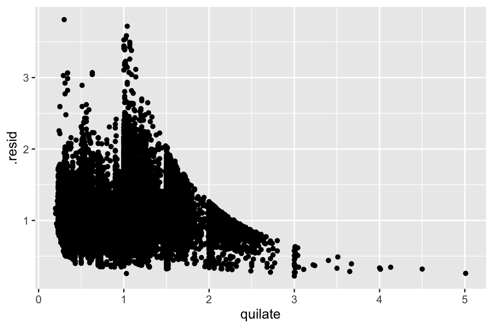
Uma vez que você tenha removido a forte relação entre quilate e preço, você pode ver o esperado da relação entre corte e preço: relativo ao tamanho deles, diamantes de melhor qualidade (corte) são mais caros.
ggplot(diamante_aug, aes(x = corte, y = .resid)) +
geom_boxplot()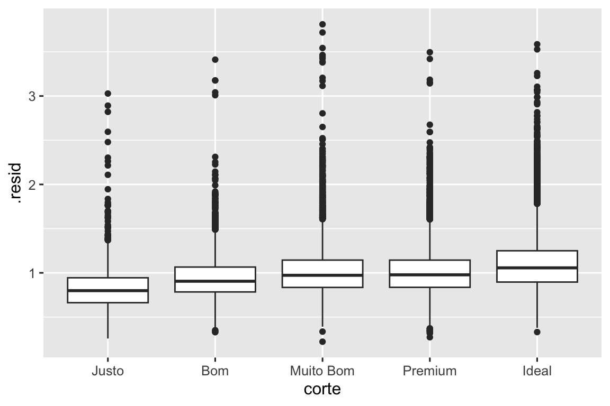
Nós não discutiremos modelagem nesse livro porque será mais fácil entender o que são os modelos e como eles funcionam uma vez que você tenha ferramentas de tratamento de dados (data wrangling) e de programação em mãos.
10.7 Resumo
Nesse capítulo você aprendeu uma variedade de ferramentas para ajudar você a entender a variação dentro dos dados. Você viu técnicas que trabalham com uma única variável no tempo e com um par de variáveis. Isso pode parecer dolorosamente restritivo se você tem dezenas ou centenas de variáveis nos seus dados, mas elas são a base sobre a qual todas as outras técnicas são construídas.
No próximo capítulo, nós focaremos em ferramentas que podemos usar para comunicar nossos resultados.
Lembre-se que quando é necessário ser explícito sobre o local de origem da função (ou conjunto de dados), usaremos a forma especial
pacote::função()oupacote::dados.↩︎